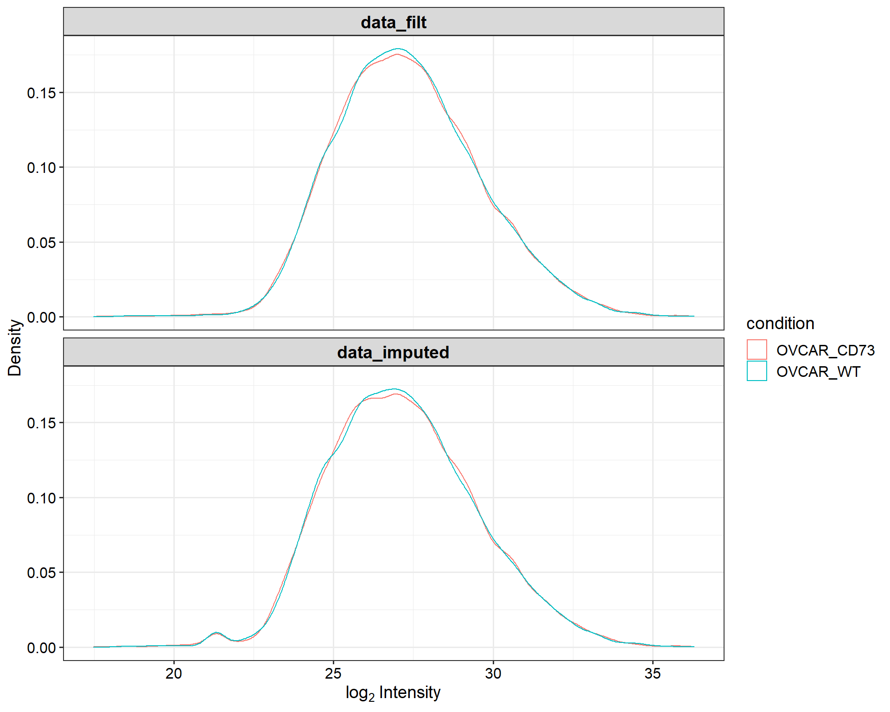
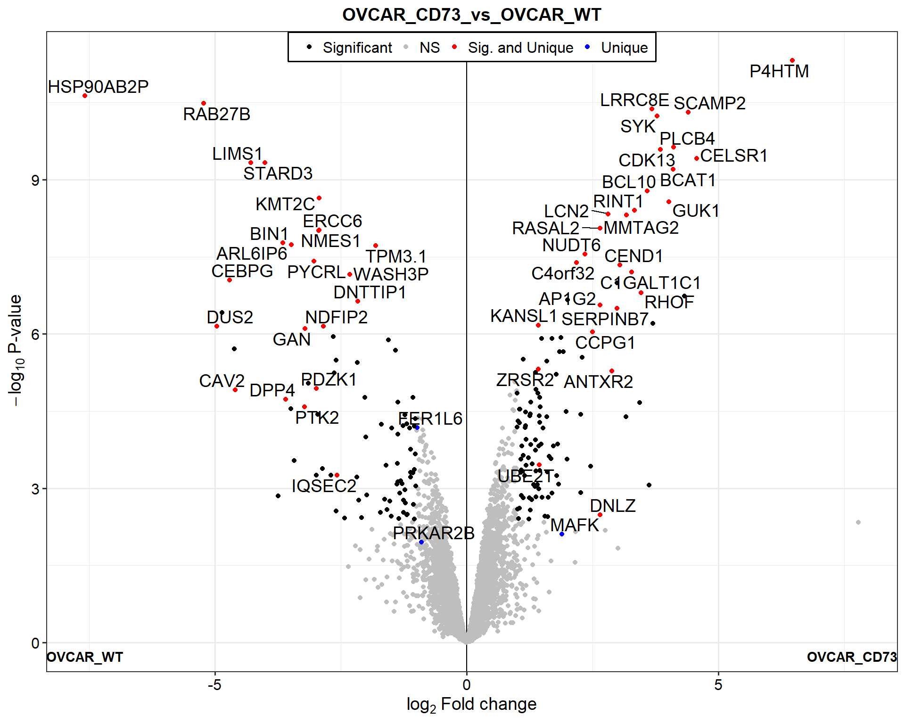
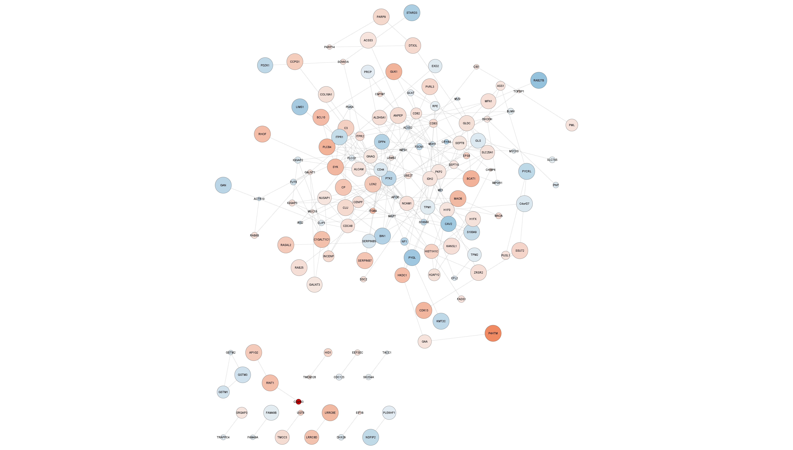

LFQ_Analysis
Fabio Bedin | MS-Unit at IEO
Last updated: 2021-09-28
Checks: 7 0
Knit directory: UC_CD73_210707/
This reproducible R Markdown analysis was created with workflowr (version 1.6.2). The Checks tab describes the reproducibility checks that were applied when the results were created. The Past versions tab lists the development history.
Great! Since the R Markdown file has been committed to the Git repository, you know the exact version of the code that produced these results.
Great job! The global environment was empty. Objects defined in the global environment can affect the analysis in your R Markdown file in unknown ways. For reproduciblity it’s best to always run the code in an empty environment.
The command set.seed(20210707) was run prior to running the code in the R Markdown file. Setting a seed ensures that any results that rely on randomness, e.g. subsampling or permutations, are reproducible.
Great job! Recording the operating system, R version, and package versions is critical for reproducibility.
Nice! There were no cached chunks for this analysis, so you can be confident that you successfully produced the results during this run.
Great job! Using relative paths to the files within your workflowr project makes it easier to run your code on other machines.
Great! You are using Git for version control. Tracking code development and connecting the code version to the results is critical for reproducibility.
The results in this page were generated with repository version 1ab726a. See the Past versions tab to see a history of the changes made to the R Markdown and HTML files.
Note that you need to be careful to ensure that all relevant files for the analysis have been committed to Git prior to generating the results (you can use wflow_publish or wflow_git_commit). workflowr only checks the R Markdown file, but you know if there are other scripts or data files that it depends on. Below is the status of the Git repository when the results were generated:
Ignored files:
Ignored: .Rhistory
Ignored: .Rproj.user/
Untracked files:
Untracked: analysis/OV90.Rmd
Untracked: analysis/OVCAR.Rmd
Untracked: code/custom_functions.R
Untracked: data/expdesign_sph_OV90.txt
Untracked: data/expdesign_sph_OVCAR.txt
Untracked: data/experimentalDesignTemplate.txt
Untracked: data/proteinGroups_Sphere_OV90.txt
Untracked: data/proteinGroups_Sphere_OVCAR.txt
Untracked: data/proteinGroups_UC_CD73.txt
Untracked: output/enrichmentmap.txt
Untracked: output/network_FC_pvalue.png
Untracked: output/network_enrichmentmap.png
Untracked: output/results_UC_CD73_210709.xlsx
Untracked: output/results_UC_CD73_210716.xlsx
Untracked: output/results_table_OV90_CD73_sph_vs_OV90_WT_sph.xlsx
Untracked: output/results_table_OV90_CD73_vs_OV90_WT.xlsx
Untracked: output/results_table_OVCAR_CD73_sph_vs_OVCAR_WT_sph.xlsx
Untracked: output/results_table_OVCAR_CD73_vs_OVCAR_WT.xlsx
Untracked: results_table.txt
Untracked: results_table.zip
Note that any generated files, e.g. HTML, png, CSS, etc., are not included in this status report because it is ok for generated content to have uncommitted changes.
These are the previous versions of the repository in which changes were made to the R Markdown (analysis/Template_LFQ.Rmd) and HTML (docs/Template_LFQ.html) files. If you’ve configured a remote Git repository (see ?wflow_git_remote), click on the hyperlinks in the table below to view the files as they were in that past version.
| File | Version | Author | Date | Message |
|---|---|---|---|---|
| Rmd | 1ab726a | FabioBedin | 2021-09-28 | add new LFQ template analysis |
## Proteomics
library("MBQN")
library("DEP")
library("SummarizedExperiment")
library("preprocessCore")
library("enrichR")
library("gprofiler2")
library("org.Hs.eg.db")
library("rrvgo")
## Plots
library("DT")
library("patchwork")
library("datapasta")
library("ggstatsplot")
library("UpSetR")
library("ggrepel")
library("visdat")
library("naniar")
## Networks
library("STRINGdb")
library("RCy3")
library("RColorBrewer")
## Other
library("here")
library("openxlsx")
library("tidyverse")source(here::here("code/custom_functions.R"))data <- read.csv(here::here(paste0("data/", params$proteinGroups)), header = TRUE,stringsAsFactors = FALSE, sep = "\t")
## qui metterei anche Razor...unique.peptides al posto di Peptides, perchè così non conto i peptidi che sono attribuiti a più di 1 PG
data <- data[data$Reverse != "+" & data$Potential.contaminant != "+" & data$Only.identified.by.site != "+" & data$Peptides >= params$n_peptides,]
data_unique <- make_unique(data, "Gene.names", "Protein.IDs", delim = ";")cond_1 <- params$test_1
cond_2 <- params$test_2
conditions<-c(cond_1,cond_2)
test<- paste(cond_1,cond_2,sep="_vs_")
expdesign <- read.table(here::here(paste0("data/", params$expdesign)), header = T, stringsAsFactors = F)
expdesign <- subset(expdesign, condition %in% conditions)
columns<-match(paste("LFQ.intensity.",expdesign$label,sep=""),colnames(data_unique))
data_se <- make_se(data_unique, columns, expdesign)
## define automaticaly the best statistical threshold to filter data besed on replicates:
if(max(expdesign$replicate)<=3){
threshold<-0
} else if(max(expdesign$replicate)<6){
threshold<-1
} else if (max(expdesign$replicate)>=6){
threshold<-trunc(max(expdesign$replicate)/2)
}
data_filt <- filter_missval(data_se, thr = threshold)OVCAR_CD73 vs OVCAR_WT
Introduction
First, we need to wrangling the original dataset. From the proteinGroups obtained by MaxQuant software, I remove proteins that are marked form the software as potential contaminant, only identify by site and reverse.
We che also filter the initial datasets by excluding all proteins identified by less than 2 peptides. (default behavior)
Now, we generate some quality control plots to investigate the structure of the dataset and observe the effect of filters. (aggiungere il tipo di filtro che faccio)
1. Quality control plots
Proteins per samples
This plot show the number of proteins identify in each samples after and before User define filters:
Filtered
plot_numbers_lables(data_filt)Not-Filtered
plot_numbers_lables(data_se)Distributions
This plot is useful for checking the distributions of the samples after and before User define filters:
Filtered
plot_normalization(data_filt)
Not-Filtered
plot_normalization(data_se)Missing data
This plot we can explore the missing data pattern after and before User define filters. Notice that the percentages of missingness are provided in the data. These are accurate to 1 decimal place. Also the dataset is arranged by columns with most missingness.
Filtered
assay(data_filt) %>%
as.data.frame() %>%
vis_miss(., sort_miss = TRUE)Not-Filtered
assay(data_se) %>%
as.data.frame() %>%
vis_miss(., sort_miss = TRUE)Sample CVs
The coefficient of variation (CV) is a statistical measure of the dispersion of data points in a data series around the mean. The coefficient of variation represents the ratio of the standard deviation to the mean, and it is a useful statistic for comparing the degree of variation from one data series to another, even if the means are drastically different from one another.
Filtered
plot_cvs(data_filt)Not-Filtered
plot_cvs(data_se)2. Upset plot
With this plot we can identify the numper of prteins in common within the 2 conditions or in common between all condition.
OVCAR_CD73
define_set <- assay(data_filt) %>% as.data.frame() %>% select(starts_with(cond_1)) %>% colnames()
n_sets <- length(define_set)
assay(data_filt) %>%
as.data.frame() %>%
select(starts_with(cond_1)) %>%
rownames_to_column() %>%
pivot_longer(!rowname, names_to = "samples", values_to = "intensity") %>%
mutate(intensity = if_else(is.na(intensity), 0, 1)) %>%
pivot_wider(names_from = samples, values_from = intensity) %>%
as.data.frame() %>%
upset(nsets = n_sets,
sets = define_set,
order.by = "freq",
keep.order = T,
text.scale = 2.5,
point.size = 4,
line.size = 0.5,
sets.bar.color = "coral2",
main.bar.color = "gray44")OVCAR_WT
define_set <- assay(data_filt) %>% as.data.frame() %>% select(starts_with(cond_2)) %>% colnames()
n_sets <- length(define_set)
assay(data_filt) %>%
as.data.frame() %>%
select(starts_with(cond_2)) %>%
rownames_to_column() %>%
pivot_longer(!rowname, names_to = "samples", values_to = "intensity") %>%
mutate(intensity = if_else(is.na(intensity), 0, 1)) %>%
pivot_wider(names_from = samples, values_from = intensity) %>%
as.data.frame() %>%
upset(nsets = n_sets,
sets = define_set,
order.by = "freq",
keep.order = T,
text.scale = 2.5,
point.size = 4,
line.size = 0.5,
sets.bar.color = "turquoise3",
main.bar.color = "gray44")Both conditions
define_set <- assay(data_filt) %>% colnames()
n_sets <- length(define_set)
n_each <- n_sets / 2
assay(data_filt) %>%
as.data.frame() %>%
rownames_to_column() %>%
pivot_longer(!rowname, names_to = "samples", values_to = "intensity") %>%
mutate(intensity = if_else(is.na(intensity), 0, 1)) %>%
pivot_wider(names_from = samples, values_from = intensity) %>%
as.data.frame() %>%
upset(nsets = n_sets,
sets = define_set,
order.by = "freq",
keep.order = T,
text.scale = 2.5,
point.size = 4,
line.size = 0.5,
sets.bar.color = rep(c("red3", "royalblue1"), each = n_each),
main.bar.color = "gray44")3. Imputation
An idealized version of a label-free discovery mass spectrometry proteomics experiment would provide absolute abundance measurements for a whole proteome, across varying conditions. Unfortunately, this ideal is not realized. Measurements are made on peptides requiring an inferential step to obtain protein level estimates. The inference is complicated by experimental factors that necessitate relative abundance estimation and result in widespread non-ignorable missing data. Relative abundance on the log scale takes the form of parameter contrasts. In a complete-case analysis, contrast estimates may be biased by missing data and a substantial amount of useful information will often go unused.
data_imputed <- mix_imputation_mean(data_filt, cond1 = cond_1, cond2 = cond_2)
plot_imputation(data_filt, data_imputed)
data_filt <- data_imputed4. Differential enrichment analysis
Protein-wise linear models combined with empirical Bayes statistics are used for the differential enrichment analysis (or differential expression analysis) and False discovery rate (FDR) is ajusted with Benjamini-Hochberg procedure. Significant proteins are are define with FDR = 0.05 and Fold change = 1
data_diff <- test_diff_BH(data_filt, type = "manual", test = test)
dep <- add_rejections(data_diff, alpha = params$FDR, lfc = params$Fold_change)
results<-get_results(dep)There are 197 significant proteins in OVCAR_CD73 vs OVCAR_WT comparison.
The results from the previous analysis can be easily visualized by a number of functions. These visualizations assist in the determination of the optimal cutoffs to be used, highlight the most interesting samples and contrasts, and pinpoint differentially enriched/expressed proteins.
4.1. Visualization of the results
PCA
The PCA plot can be used to get a high-level overview of the data. This can be very useful to observe batch effects, such as clear differences between replicates.
if(params$Imputation){
if(nrow(dep) >= 500){
n_value <- 500
}else {
n_value <- nrow(dep)
}
plot_pca(dep, x = 1, y = 2, n = n_value, point_size = 4, indicate = "condition")
} else {
var <- apply(assay(dep), 1, sd)
df <- assay(dep)[order(var, decreasing = TRUE)[seq_len(nrow(dep))],]
n_value <- df %>% as.data.frame() %>% drop_na() %>% nrow()
plot_pca(dep, x = 1, y = 2, n = n_value, point_size = 4, indicate = "condition")
}Volcano
Volcano plots allows to inspect the enrichment of proteins between the two samples (x axis) and their corresponding adjusted p value (y axis).
plot_volcano(dep, contrast=test, add_names=T, label_size=5, adjusted = F)Volcano and unique
plot_volcano_2(dep, contrast=test, add_names=T, label_size=5, adjusted = F, unique_vec = uni_name)
Cluster heatmap
The heatmap representation gives an overview of all significant proteins (rows) in all samples (columns). This allows to see general trends, for example if one sample or replicate is really different compared to the others. Additionally, the clustering of samples (columns) can indicate closer related samples and clustering of proteins (rows) indicates similarly behaving proteins.
plot_heatmap(dep, type = "centered", kmeans = TRUE, k = 5, show_row_names = F, indicate = "condition", col_limit = 5)4.2. Result table
In this table are summarized the results of DEP analysis, sorted by p.value. Proteins that are UP regulated are colored with a red box in Fold change column, in the orhter hand proteins that are DOWN regulated are colored with blue.
results %>%
select(starts_with("name") | starts_with(test)) %>%
filter(across(ends_with("significant"))) %>%
arrange(across(ends_with("p.adj"))) %>%
mutate(across(2:3, format, scientific = T, digits = 2)) %>%
dplyr::rename_with(~ tolower(gsub(paste0(test,"_"), "", .x)), .cols = starts_with(test)) %>%
mutate(significant = str_to_title(significant)) %>%
dplyr::rename(Fold.Change = ratio, Gene.name = name) %>%
DT::datatable(options = list(
columnDefs = list(list(className = 'dt-center', targets = 1:5)),
pageLength = 10)) %>%
formatStyle('Fold.Change', backgroundColor = styleInterval(c(-1, 1), c('lightblue', 'white', 'tomato'))) %>%
formatStyle('significant', color = styleEqual(c("True", "False"), c('green', 'red')))5. Gene Ontology
Now I perfom a gene onology analysis (GO or by branch GO:MF, GO:BP, GO:CC) and a KEGG ontology.
The enrichment results are visualized with an interactive Manhattan-like-plot named “Gostplot”.
5.1. OVCAR_CD73
Gostplot
UP regulated proteins in OVCAR_CD73 were used to generate these gene ontologies.
Gname <- results %>% filter(significant & get(paste0(test, "_ratio")) > 0) %>% pull(name)
if(!params$Imputation){
Uni <- unique_pair(data_filt_unique, conditions = conditions, table = T) %>%
filter(!!sym(paste0("unique_", cond_1)) == "+") %>%
pull(name) %>% unique()
Gname <- c(Gname, Uni)
}
if(length(Gname) == 0){
print("NOT enough data.")
}else{
GO <- gost(query = Gname, organism = "hsapiens", sources = c("GO:BP", "GO:MF", "GO:CC", "KEGG"), ordered_query = T, evcodes = TRUE)
if(is.null(GO)){
print("NOT enough data.")
}else{
gostplot(GO, capped = TRUE, interactive = TRUE)
}
}Table results
The results can also be visualized with a table:
if(is.null(GO)){
print("NOT enough data.")
}else{
GO$result %>%
as.data.frame() %>%
select(starts_with(c("source", "term_name", "p_value", "term_size", "intersection_size"))) %>%
arrange(p_value) %>%
mutate(p_value = format(p_value, scientific = T, digits = 2)) %>%
DT::datatable(options = list(
columnDefs = list(list(className = 'dt-center', targets = 1:6)),
pageLength = 10)) %>%
formatStyle('source', backgroundColor = styleEqual(c("GO:BP", "GO:MF", "GO:CC", "KEGG"), c('orange', 'tomato', 'lightgreen', 'violet')))
}Treemap
BP
if(sum(GO$result$source == "GO:BP") >= 5 & !is.null(GO)){
simMatrix <- GO$result %>%
as.data.frame() %>%
filter(source == "GO:BP") %>%
pull(term_id) %>%
calculateSimMatrix(orgdb="org.Hs.eg.db", ont="BP", method="Rel")
scores <- setNames(-log10(GO$result$p_value), GO$result$term_id)
reducedTerms <- reduceSimMatrix(simMatrix,
scores,
threshold=0.7,
orgdb="org.Hs.eg.db")
treemapPlot(reducedTerms)
BP <- T
}else{
print("NOT enough data.")
BP <- F
}[1] "NOT enough data."MF
if(sum(GO$result$source == "GO:MF") >= 5 & !is.null(GO)){
simMatrix <- GO$result %>%
as.data.frame() %>%
filter(source == "GO:MF") %>%
pull(term_id) %>%
calculateSimMatrix(orgdb="org.Hs.eg.db", ont="MF", method="Rel")
scores <- setNames(-log10(GO$result$p_value), GO$result$term_id)
reducedTerms <- reduceSimMatrix(simMatrix,
scores,
threshold=0.7,
orgdb="org.Hs.eg.db")
treemapPlot(reducedTerms)
MF <- T
}else{
print("NOT enough data.")
MF <- F
}[1] "NOT enough data."CC
if(sum(GO$result$source == "GO:CC") >= 5 & !is.null(GO)){
simMatrix <- GO$result %>%
as.data.frame() %>%
filter(source == "GO:CC") %>%
pull(term_id) %>%
calculateSimMatrix(orgdb="org.Hs.eg.db", ont="CC", method="Rel")
scores <- setNames(-log10(GO$result$p_value), GO$result$term_id)
reducedTerms <- reduceSimMatrix(simMatrix,
scores,
threshold=0.7,
orgdb="org.Hs.eg.db")
treemapPlot(reducedTerms)
CC <- T
}else{
print("NOT enough data.")
CC <- F
}ScatterPlot
if(BP | MF | CC){
scatterPlot(simMatrix, reducedTerms, size = "score", labelSize = 5)
}else{
print("NOT enough data.")
}5.2. OVCAR_WT
Gostplot
UP regulated proteins in OVCAR_WT were used to generate these gene ontologies.
Gname <- results %>% filter(significant & get(paste0(test, "_ratio")) < 0) %>% pull(name)
if(!params$Imputation){
Uni <- unique_pair(data_filt_unique, conditions = conditions, table = T) %>%
filter(!!sym(paste0("unique_", cond_2)) == "+") %>%
pull(name) %>% unique()
Gname <- c(Gname, Uni)
}
if(length(Gname) == 0){
print("NOT enough data.")
}else{
GO <- gost(query = Gname, organism = "hsapiens", sources = c("GO:BP", "GO:MF", "GO:CC", "KEGG"), ordered_query = T, evcodes = TRUE)
if(is.null(GO)){
print("NOT enough data.")
}else{
gostplot(GO, capped = TRUE, interactive = TRUE)
}
}Table results
The results can also be visualized with a table:
if(is.null(GO)){
print("NOT enough data.")
}else{
GO$result %>%
as.data.frame() %>%
select(starts_with(c("source", "term_name", "p_value", "term_size", "intersection_size"))) %>%
arrange(p_value) %>%
mutate(p_value = format(p_value, scientific = T, digits = 2)) %>%
DT::datatable(options = list(
columnDefs = list(list(className = 'dt-center', targets = 1:6)),
pageLength = 10)) %>%
formatStyle('source', backgroundColor = styleEqual(c("GO:BP", "GO:MF", "GO:CC", "KEGG"), c('orange', 'tomato', 'lightgreen', 'violet')))
}Treemap
BP
if(sum(GO$result$source == "GO:BP") >= 5 & !is.null(GO)){
simMatrix <- GO$result %>%
as.data.frame() %>%
filter(source == "GO:BP") %>%
pull(term_id) %>%
calculateSimMatrix(orgdb="org.Hs.eg.db", ont="BP", method="Rel")
scores <- setNames(-log10(GO$result$p_value), GO$result$term_id)
reducedTerms <- reduceSimMatrix(simMatrix,
scores,
threshold=0.7,
orgdb="org.Hs.eg.db")
treemapPlot(reducedTerms)
BP <- T
}else{
print("NOT enough data.")
BP <- F
}MF
if(sum(GO$result$source == "GO:MF") >= 5 & !is.null(GO)){
simMatrix <- GO$result %>%
as.data.frame() %>%
filter(source == "GO:MF") %>%
pull(term_id) %>%
calculateSimMatrix(orgdb="org.Hs.eg.db", ont="MF", method="Rel")
scores <- setNames(-log10(GO$result$p_value), GO$result$term_id)
reducedTerms <- reduceSimMatrix(simMatrix,
scores,
threshold=0.7,
orgdb="org.Hs.eg.db")
treemapPlot(reducedTerms)
MF <- T
}else{
print("NOT enough data.")
MF <- F
}CC
if(sum(GO$result$source == "GO:CC") >= 5 & !is.null(GO)){
simMatrix <- GO$result %>%
as.data.frame() %>%
filter(source == "GO:CC") %>%
pull(term_id) %>%
calculateSimMatrix(orgdb="org.Hs.eg.db", ont="CC", method="Rel")
scores <- setNames(-log10(GO$result$p_value), GO$result$term_id)
reducedTerms <- reduceSimMatrix(simMatrix,
scores,
threshold=0.7,
orgdb="org.Hs.eg.db")
treemapPlot(reducedTerms)
CC <- T
}else{
print("NOT enough data.")
CC <- F
}ScatterPlot
if(BP | MF | CC){
scatterPlot(simMatrix, reducedTerms, size = "score", labelSize = 5)
}else{
print("NOT enough data.")
}
6. Network analysis
Overview from STRING Database: In STRING, each protein-protein interaction is annotated with one or more ‘scores’. Importantly, these scores do not indicate the strength or the specificity of the interaction. Instead, they are indicators of confidence, i.e. how likely STRING judges an interaction to be true, given the available evidence. All scores rank from 0 to 1, with 1 being the highest possible confidence. A score of 0.5 would indicate that roughly every second interaction might be erroneous (i.e., a false positive).
if(leng_dep != 0){
string_db <- STRINGdb$new(version="11", species=9606, score_threshold=400)
string_mapped <- string_db$map(string_res, "Gene.name", removeUnmappedRows = TRUE, quiet = T)
hits <- string_mapped$STRING_id[1:leng_dep]
string_db$plot_network(hits, add_link = T)
}else{
print("NOT enough data.")
}6.1. Cytoscape Network
Cytoscape is an open source software platform for visualizing complex networks and integrating these with any type of attribute data. In this presentation all proteins showing at least one confidence level from the STRING database are shown. The color code is relative to fold change and the size is directly proportional to the significance (p-value).
print("Enable Cytoscape option to see this results.")if(n_edge != 0){
knitr::include_graphics(paste0("assets/network_FC_pvalue_", test, ".png"), error = F)
}else{
print("NOT enough data.")
}
6.2. Cytoscape EnrichmentMap
An enrichment map is a different sort of network. Instead of nodes representing genes, nodes represent pathways or functions. Edges between these pathways or functions represent shared genes or pathway crosstalk. An enrichment map is a way to visualize your enrichment results to help reduce redundancy and uncover main themes.
print("Enable Cytoscape option to see this results.")Gname <- results %>% filter(significant) %>% pull(name)
if(!params$Imputation){
Uni <- unique_pair(data_filt_unique, conditions = conditions, table = T) %>%
pull(name) %>%
unique()
Gname <- c(Gname, Uni)
}
if(length(Gname) == 0){
print("NOT enough data.")
}else{
GO <- gost(query = Gname, organism = "hsapiens", sources = c("GO:BP", "GO:MF", "GO:CC", "KEGG"), ordered_query = T, evcodes = TRUE)
if(is.null(GO)){
print("NOT enough data.")
enrich_map = F
}else{
enrich_map = T
gem <- GO$result[,c("term_id", "term_name", "p_value", "intersection")]
colnames(gem) <- c("GO.ID", "Description", "p.Val", "Genes")
gem$FDR <- gem$p.Val
gem$Phenotype = "+1"
gem <- gem[,c("GO.ID", "Description", "p.Val", "FDR", "Phenotype", "Genes")]
head(gem)
write.table(gem, here::here("output/enrichmentmap.txt"),col.name=TRUE,sep="\t",row.names=FALSE,quote=FALSE)
}
}if(enrich_map){
knitr::include_graphics(paste0("assets/network_enrichmentmap_", test, ".png"), error = F)
}else{
print("NOT enough data.")
}
saveWorkbook(excel, here::here(paste0("output/results_table_", test, ".xlsx")), overwrite = T)
sessionInfo()R version 4.0.3 (2020-10-10)
Platform: x86_64-w64-mingw32/x64 (64-bit)
Running under: Windows 10 x64 (build 19042)
Matrix products: default
locale:
[1] LC_COLLATE=Italian_Italy.1252 LC_CTYPE=Italian_Italy.1252
[3] LC_MONETARY=Italian_Italy.1252 LC_NUMERIC=C
[5] LC_TIME=Italian_Italy.1252
attached base packages:
[1] parallel stats4 stats graphics grDevices utils datasets
[8] methods base
other attached packages:
[1] forcats_0.5.1 stringr_1.4.0
[3] dplyr_1.0.7 purrr_0.3.4
[5] readr_1.4.0 tidyr_1.1.3
[7] tibble_3.1.2 tidyverse_1.3.1
[9] openxlsx_4.2.4 here_1.0.1
[11] RColorBrewer_1.1-2 RCy3_2.10.2
[13] STRINGdb_2.2.2 naniar_0.6.1
[15] visdat_0.5.3 ggrepel_0.9.1
[17] ggplot2_3.3.5 UpSetR_1.4.0
[19] ggstatsplot_0.8.0 datapasta_3.1.0
[21] patchwork_1.1.1 DT_0.18
[23] rrvgo_1.2.0 org.Hs.eg.db_3.12.0
[25] AnnotationDbi_1.52.0 gprofiler2_0.2.0
[27] enrichR_3.0 preprocessCore_1.52.1
[29] SummarizedExperiment_1.20.0 Biobase_2.50.0
[31] GenomicRanges_1.42.0 GenomeInfoDb_1.26.2
[33] IRanges_2.24.1 S4Vectors_0.28.1
[35] BiocGenerics_0.36.0 MatrixGenerics_1.2.1
[37] matrixStats_0.59.0 DEP_1.12.0
[39] MBQN_2.2.0 workflowr_1.6.2
loaded via a namespace (and not attached):
[1] rappdirs_0.3.3 R.methodsS3_1.8.1
[3] coda_0.19-4 bit64_4.0.5
[5] knitr_1.33 DelayedArray_0.16.2
[7] R.utils_2.10.1 data.table_1.14.0
[9] RCurl_1.98-1.3 doParallel_1.0.16
[11] generics_0.1.0 RSQLite_2.2.7
[13] correlation_0.6.1 chron_2.3-56
[15] bit_4.0.4 lubridate_1.7.10
[17] xml2_1.3.2 httpuv_1.6.1
[19] assertthat_0.2.1 WRS2_1.1-2
[21] xfun_0.24 hms_1.1.0
[23] jquerylib_0.1.4 evaluate_0.14
[25] promises_1.2.0.1 fansi_0.5.0
[27] readxl_1.3.1 caTools_1.18.2
[29] dbplyr_2.1.1 igraph_1.2.6
[31] DBI_1.1.1 htmlwidgets_1.5.3
[33] reshape_0.8.8 kSamples_1.2-9
[35] Rmpfr_0.8-4 paletteer_1.3.0
[37] hash_2.2.6.1 ellipsis_0.3.2
[39] crosstalk_1.1.1 backports_1.2.1
[41] insight_0.14.2 gridBase_0.4-7
[43] vctrs_0.3.8 imputeLCMD_2.0
[45] Cairo_1.5-12.2 cachem_1.0.5
[47] withr_2.4.2 treemap_2.4-2
[49] cluster_2.1.0 lazyeval_0.2.2
[51] crayon_1.4.1 labeling_0.4.2
[53] pkgconfig_2.0.3 SuppDists_1.1-9.5
[55] slam_0.1-48 statsExpressions_1.1.0
[57] ProtGenerics_1.22.0 wordcloud_2.6
[59] rlang_0.4.11 RJSONIO_1.3-1.4
[61] lifecycle_1.0.0 MatrixModels_0.5-0
[63] sandwich_3.0-1 affyio_1.60.0
[65] BiocFileCache_1.14.0 modelr_0.1.8
[67] cellranger_1.1.0 rprojroot_2.0.2
[69] graph_1.68.0 Matrix_1.2-18
[71] mc2d_0.1-21 zoo_1.8-9
[73] reprex_2.0.0 whisker_0.4
[75] GlobalOptions_0.1.2 pheatmap_1.0.12
[77] png_0.1-7 viridisLite_0.4.0
[79] rjson_0.2.20 mzR_2.24.1
[81] PMCMRplus_1.9.0 parameters_0.14.0
[83] bitops_1.0-7 shinydashboard_0.7.1
[85] R.oo_1.24.0 KernSmooth_2.23-17
[87] blob_1.2.1 shape_1.4.6
[89] multcompView_0.1-8 tmvtnorm_1.4-10
[91] ggsignif_0.6.2 scales_1.1.1
[93] memoise_2.0.0 magrittr_2.0.1
[95] plyr_1.8.6 gplots_3.1.1
[97] zlibbioc_1.36.0 compiler_4.0.3
[99] plotrix_3.8-1 pcaMethods_1.82.0
[101] clue_0.3-59 cli_3.0.0
[103] affy_1.68.0 XVector_0.30.0
[105] pbapply_1.4-3 MASS_7.3-53
[107] tidyselect_1.1.1 vsn_3.58.0
[109] stringi_1.6.2 highr_0.9
[111] yaml_2.2.1 GOSemSim_2.16.1
[113] norm_1.0-9.5 MALDIquant_1.19.3
[115] grid_4.0.3 sass_0.4.0
[117] tools_4.0.3 rstudioapi_0.13
[119] circlize_0.4.13 foreach_1.5.1
[121] git2r_0.28.0 gridExtra_2.3
[123] ipmisc_6.0.2 pairwiseComparisons_3.1.6
[125] farver_2.1.0 mzID_1.28.0
[127] digest_0.6.27 BiocManager_1.30.16
[129] shiny_1.6.0 proto_1.0.0
[131] BWStest_0.2.2 Rcpp_1.0.6
[133] broom_0.7.8 BayesFactor_0.9.12-4.2
[135] performance_0.7.2 later_1.2.0
[137] ncdf4_1.17 httr_1.4.2
[139] MSnbase_2.15.7 ComplexHeatmap_2.6.2
[141] effectsize_0.4.5 colorspace_2.0-2
[143] rvest_1.0.0 XML_3.99-0.6
[145] fs_1.5.0 rematch2_2.1.2
[147] gmm_1.6-6 plotly_4.9.4.1
[149] xtable_1.8-4 gmp_0.6-2
[151] jsonlite_1.7.2 zeallot_0.1.0
[153] NLP_0.2-1 R6_2.5.0
[155] tm_0.7-8 gsubfn_0.7
[157] pillar_1.6.1 htmltools_0.5.1.1
[159] mime_0.11 glue_1.4.2
[161] fastmap_1.1.0 BiocParallel_1.24.1
[163] codetools_0.2-16 mvtnorm_1.1-2
[165] utf8_1.2.1 lattice_0.20-41
[167] bslib_0.2.5.1 sqldf_0.4-11
[169] curl_4.3.2 gtools_3.9.2
[171] zip_2.2.0 GO.db_3.12.1
[173] limma_3.46.0 rmarkdown_2.9
[175] munsell_0.5.0 GetoptLong_1.0.5
[177] GenomeInfoDbData_1.2.4 iterators_1.0.13
[179] impute_1.64.0 haven_2.4.1
[181] gtable_0.3.0 bayestestR_0.10.0